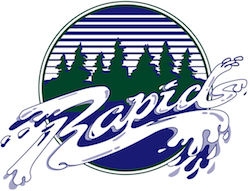

<!DOCTYPE html>
<html lang="en">
<head>
    <meta charset="UTF-8">
    <meta http-equiv="X-UA-Compatible" content="IE=edge">
    <meta name="viewport" content="width=device-width, initial-scale=1.0">
    <title>Document</title>
</head>
<body>
    
</body>
</html>

<!DOCTYPE html>
<html lang="en-us">

<head>
  <meta charset="utf-8" />
  <title>Site Plan</title>
  <link type="text/css" rel="stylesheet" href="styles/site-plan-rafting.css" />
</head>

<body>
  <header>
    <h1>Rapids Rush Tours Site Plan</h1>
    <h2>Olivia Smart</h2>
    <h2>WDD 130-4</h2>
    <!-- In the header above, add the name of your site, your name and class number. For example if you are in section 3 you would put WDD 130-03 -->
  </header>
  <main>
    <!-- ------------------------Steps 2-5------------------------------ -->
    <hr />
    <h2>Overview</h2>
    <h3>Purpose</h3>
    <p>At Rapids Rush, we aim to provide an unforgettable, safe, and fun experience on the rapids. 
      Our knowledgeable guides will take you through the rapids and show you all the best spots. We gaurantee a thrilling, 
      rewarding, and memorable trip that will leave you a lasting impression. 
    </p>
    <!-- change this -->

    <h3>Audience</h3>
    <p> Here at Rapid Rush our target customers are thrill-seekers of all ages, who are looking for a unique experience and an
      adrenaline rush. They typically have some disposable income, enjoy the outdoors, and are looking for a 
      way to escape the everyday grind. Our customers want an unforgettable and safe experience, but they need a 
      reliable, trustworthy provider to provide it. They also want ease of access to information and the ability to
       book their trip online. Our customers usually access our site via desktop, laptop, or mobile device. </p>
    <!-- change this -->

    <hr />
    <h2>Branding</h2>
    <h3>Website Logo</h3>
    <!-- Replace this with some sort of logo for your site.  A logo can be as simple as the name of your site in a nice font :) -->
    
    <hr />
    <h2>Style Guide</h2>

    <!-- ------------------------Steps 6-9------------------------------ -->

    <h3>Color Palette</h3>
    <!--  The colors you choose for a website are one of the most important decisions you will make. Follow the instructions on the activity in Canvas then return and replace the color codes below with the hex color codes (the 6 digit numbers that show at the bottom of each color) for the colors you have chosen below.  You should have at least 2 colors but do not have to fill in all 4 if you do not need them.  -->

    <!-- Copy and paste the URL to your finished palette below. Replace the href value that is there with yours. Make sure to paste it into both the href value and the content text of the <a> tag -->
    <p>Palette URL: <a href="https://coolors.co/413620-ca925b-0099ad-1130c0"
      target="_blank">https://coolors.co/413620-ca925b-0099ad-1130c0</a>

    <table class="colors">
      <tr>
        <th>Primary</th>
        <th>Secondary</th>
        <th>Accent 1</th>
        <th>Accent 2</th>
      </tr>
      <!-- Replace the numbers in the boxes below with your hex color codes. Then switch to the site-plan.css file and change your colors there as well. -->
      <tr>
        <td class="primary">[#1130C0]</td>
        <td class="secondary">[#0099AD]</td>
        <td class="accent1">[#CA925B]</td>
        <td class="accent2">#413620</td>
      </tr>
    </table>

    <!-- ------------------------Steps 10-12------------------------------ -->

    <h3>Typography</h3>
    <!-- Choose a font for your paragraphs (body copy) and headlines. What font(s) have you chosen? Think also about which of your colors above you might use for background and font colors. -->

    <h4>
      Heading Font: Sigmar
      <!-- change this -->
    </h4>
    <h4>
      Paragraph Font: Montserrat
      <!-- change this -->
    </h4>
    <h3>Montserrat</h3>
    <p>
      The best Whitewater Rafting in Colorado, White Water Rafting Company
      offers rafting on the Colorado and Roaring Fork Rivers in Glenwood
      Springs. Since 1974, we have been family owned and operated, rafting the
      Shoshone section of Glenwood Canyon and beyond.
    </p>
    <h3>Colored paragraph example</h3>
    <p class="colored">
      Trips vary from mild and great for families, to trips exclusively for
      physically fit and experienced rafters. No matter what type of river
      adventures you are seeking, White Water Rafting Company can make it
      happen for you.
    </p>

    <!-- ------------------------Step 13------------------------------ -->

    <h3>Navigation</h3>
    <!-- Think about how you want your navigation bar to look. In the site-plan.css file change the colors to your colors to get the look you desire. -->
    <nav>
      <a href="#">Home</a>
      <a href="#">Page2</a>
      <a href="#">Contact Us</a>
    </nav>
    <hr />
    <h2>Site Map</h2>
    <div class="sitemap">
      <div class="sm-home">Home</div>
      <div class="sm-page2">
        [Page2]
        <!-- this page will have a name later -->
      </div>
      <div class="sm-page3">Contact Us</div>

      <div class="top">&nbsp;</div>
      <div class="left">&nbsp;</div>
      <div class="right">&nbsp;</div>
    </div>
    <hr />
    <h2>Wireframes</h2>
    <!-- Create an additional wireframe for your site. List it here below the Home page wireframe. -->

    <h3>Home</h3>

    

    <h3>[Page 2]</h3>

    <!--  -->
  </main>
</body>

</html>